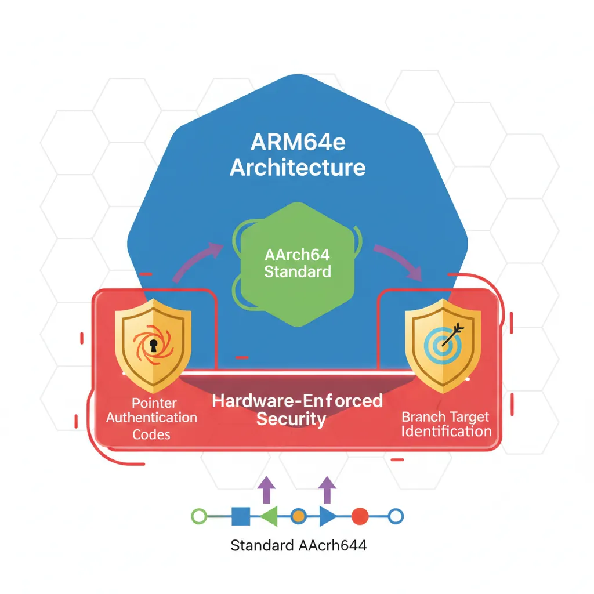
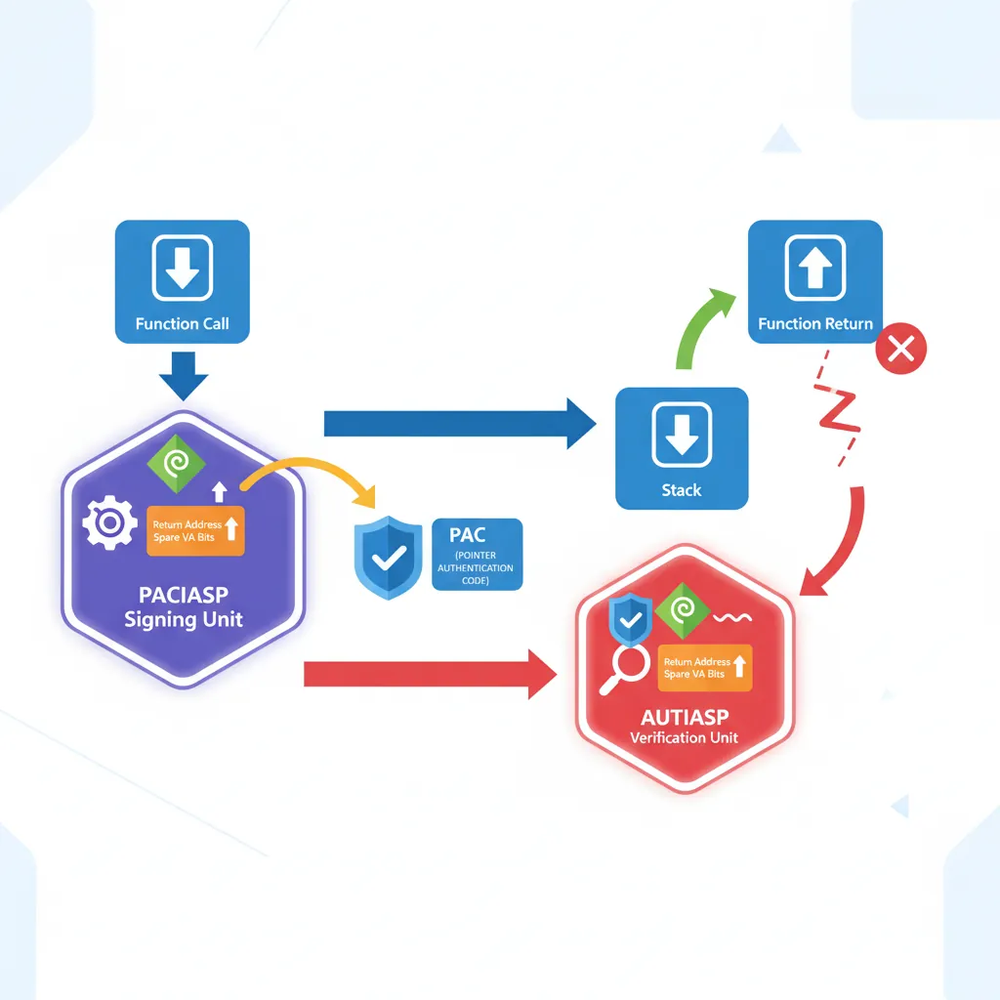
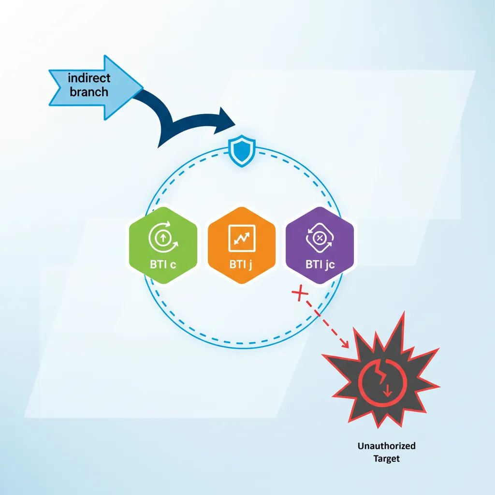
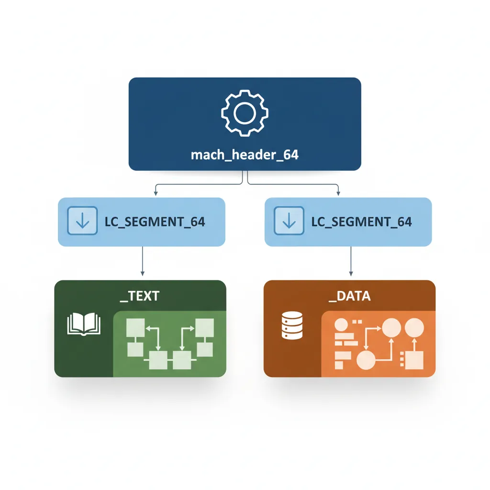
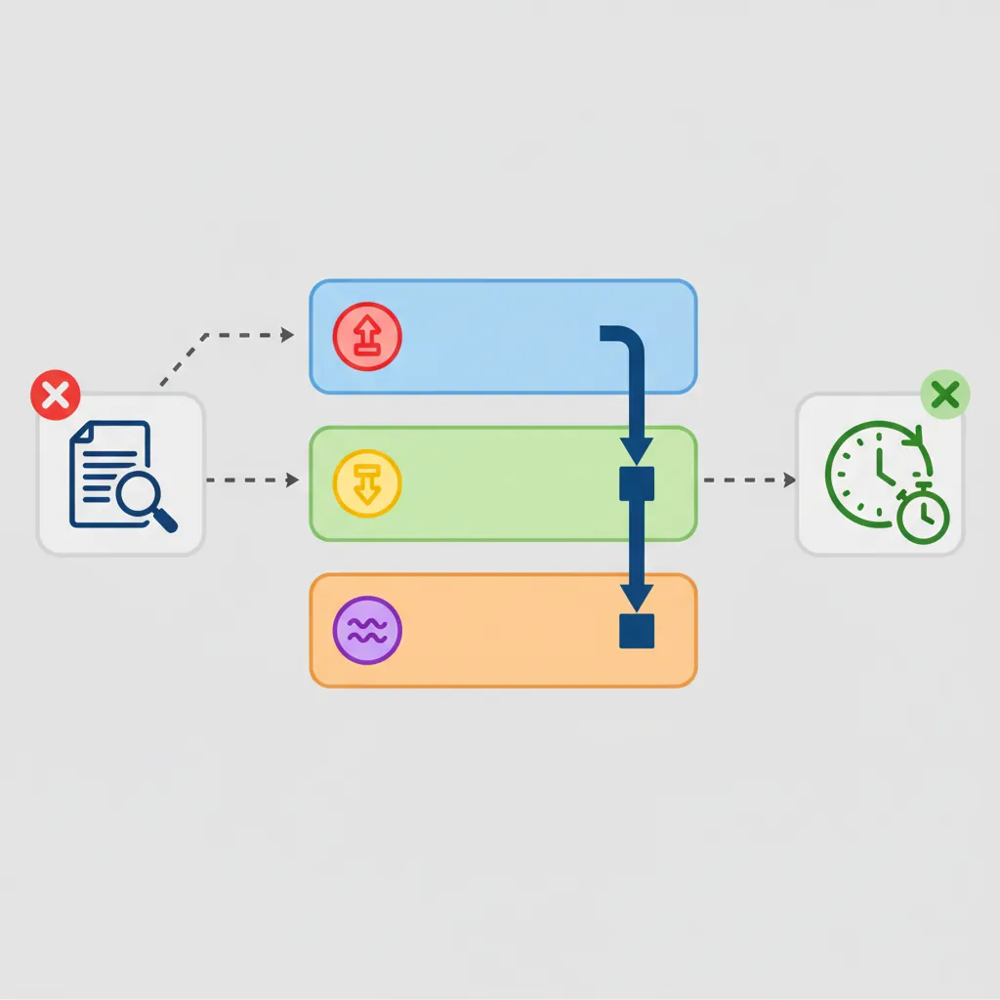

Introduction & ARM64e vs AArch64
ARM Assembly Mastery
Architecture History & Core Concepts
ARMv1→v9, RISC philosophy, profilesARM32 Instruction Set Fundamentals
ARM vs Thumb, registers, CPSR, barrel shifterAArch64 Registers, Addressing & Data Movement
X/W regs, addressing modes, load/store pairsArithmetic, Logic & Bit Manipulation
ADD/SUB, bitfield extract/insert, CLZBranching, Loops & Conditional Execution
Branch types, link register, jump tablesStack, Subroutines & AAPCS
Calling conventions, prologue/epilogueMemory Model, Caches & Barriers
Weak ordering, DMB/DSB/ISB, TLBNEON & Advanced SIMD
Vector ops, intrinsics, media processingSVE & SVE2 Scalable Vector Extensions
Predicate regs, gather/scatter, HPC/MLFloating-Point & VFP Instructions
IEEE-754, scalar FP, rounding modesException Levels, Interrupts & Vector Tables
EL0–EL3, GIC, fault debuggingMMU, Page Tables & Virtual Memory
Stage-1 translation, permissions, huge pagesTrustZone & ARM Security Extensions
Secure monitor, world switching, TF-ACortex-M Assembly & Bare-Metal Embedded
NVIC, SysTick, linker scripts, low-powerCortex-A System Programming & Boot
EL3→EL1 transitions, MMU setup, PSCIApple Silicon & macOS ABI
ARM64e PAC, Mach-O, dyld, perf countersInline Assembly, GCC/Clang & C Interop
Constraints, clobbers, compiler interactionPerformance Profiling & Micro-Optimization
Pipeline hazards, PMU, benchmarkingReverse Engineering & ARM Binary Analysis
ELF, disassembly, CFR, iOS/Android quirksBuilding a Bare-Metal OS Kernel
Bootloader, UART, scheduler, context switchARM Microarchitecture Deep Dive
OOO pipelines, reorder buffers, branch predictVirtualization Extensions
EL2 hypervisor, stage-2 translation, KVMDebugging & Tooling Ecosystem
GDB, OpenOCD/JTAG, ETM/ITM, QEMULinkers, Loaders & Binary Format Internals
ELF deep dive, relocations, PIC, crt0Cross-Compilation & Build Systems
GCC/Clang toolchains, CMake, firmware genARM in Real Systems
Android, FreeRTOS/Zephyr, U-Boot, TF-ASecurity Research & Exploitation
ASLR, PAC attacks, ROP/JOP, kernel exploitEmerging ARMv9 & Future Directions
MTE, SME, confidential compute, AI accelARM64e is Apple's implementation of ARMv8.3-A Pointer Authentication combined with ARMv8.5-A BTI. The ISA gains new instructions (PACIA/AUTIA families), the ABI gains new calling convention requirements (PACIASP in prologues), and the hardware gain new registers (APxxx keys). On macOS, this coexists with the Mach-O binary format, dyld interposition, and Apple's hardened runtime — all of which influences how hand-written assembly must be structured.

Pointer Authentication Codes (PAC)
PAC uses spare bits in 64-bit virtual addresses (bits 63–49 on systems with fewer than 50-bit VA) to store a cryptographic MAC. The key is a hardware register (APIAKey_EL1) not accessible from EL0. Signing inserts the PAC; stripping/authenticating removes it. Forgery causes an authentication fault (SIGSEGV on macOS).

PACIASP / AUTIASP
// ARM64e function prologue/epilogue — required by Apple ABI for
// any function that modifies LR (i.e., any non-leaf function)
// PACIASP: sign LR using SP as context + IA key → stores signed LR on return addr
// AUTIASP: authenticate (strip and verify) LR using SP as context
.text
.align 4
_my_function:
PACIASP // Sign LR with SP context (IA key)
STP x29, x30, [sp, #-16]! // Push frame pointer + signed LR
MOV x29, sp // Set up frame pointer (MANDATORY on Apple)
// ... function body ...
BL _some_other_function
LDP x29, x30, [sp], #16 // Restore frame pointer + signed LR
AUTIASP // Authenticate LR — fail → SIGILL/SIGSEGV
RET // Jump via authenticated LR
// Leaf function (no BL inside): no PAC needed, LR never saved
.align 4
_leaf_function:
ADD x0, x0, x1
RETData Pointer Authentication
// Signing and authenticating data pointers (DA key, generic key)
// PACDA: sign data pointer in Xn using DA key, SP as modifier
// AUTDA: authenticate data pointer (strip and verify)
// XPACD: strip PAC without authentication (for debugging/comparison)
// Sign a global pointer before storing
LDR x0, =my_vtable_ptr // Load pointer value (untagged)
PACDA x0, sp // Sign: x0 = signed_pointer(x0, sp, DA_key)
STR x0, [x19, #vtable_offset] // Store signed pointer
// Authenticate before indirect call
LDR x0, [x19, #vtable_offset] // Load signed pointer
AUTDA x0, sp // Authenticate: restores untagged on success
// Poisons to non-canonical addr on failure
LDR x8, [x0, #method_offset] // Load method pointer from vtable
BLRAA x8, x0 // Branch with PAC: call + authenticate in one op
// Strip PAC for display (no authentication — unsafe!)
LDR x0, [x19, #vtable_offset]
XPACD x0 // Remove PAC bits: x0 = raw VA
// Use x0 only for printing / comparison, NOT for callingBranch Target Identification (BTI)

// BTI: valid indirect branch targets must start with BTI instruction
// Enabled via GNU_PROPERTY_AARCH64_FEATURE_1_BTI in ELF note or
// _COMM_PAGE_CPU_CAPABILITIES bit on macOS
// BTI variants: BTI c (BLR targets), BTI j (BR targets), BTI jc (both)
.section __TEXT,__text
.align 4
_callback_function:
BTI c // Valid target for BLR only
STP x29, x30, [sp, #-16]!
MOV x29, sp
// ... implementation ...
LDP x29, x30, [sp], #16
RET
.align 4
_jump_table_entry:
BTI j // Valid target for BR only (switch jump tables)
B _actual_handler
.align 4
_general_entry:
BTI jc // Valid for both BR and BLR
NOP
// Attempting indirect branch to non-BTI landing pad → EXC_BAD_INSTRUCTION
// (SIGILL with ESR_EL1.EC = 0b111100, ISS = BTI trap)
// macOS disables BTI enforcement for userspace by default but Hardened Runtime
// .entitlements can enable it. XNU kernel enforces BTI for kernel extensions.Mach-O Binary Format
Mach-O Header & Load Commands
Every macOS binary starts with a mach_header_64 (magic 0xFEEDFACF for 64-bit). This is followed by load commands: LC_SEGMENT_64 defines virtual memory regions; LC_DYLD_INFO_ONLY carries bind/lazy-bind/export trie tables; LC_SYMTAB holds the symbol table; LC_DYSYMTAB holds dynamic symbol info. Unlike ELF, Mach-O has no separate section headers independent of segments — sections are nested inside LC_SEGMENT_64 commands.

# Inspect Mach-O structure
otool -h -l /usr/bin/clang | head -60
# Dump __TEXT,__text section disassembly (Apple llvm-objdump)
otool -t -v -V /usr/lib/system/libsystem_c.dylib | head -80
# Show all load commands
otool -l /usr/bin/swift | grep -A4 "LC_SEGMENT_64"
# Show exported symbols (from export trie)
nm -gU /usr/lib/libSystem.B.dylib | head -20
# Check PAC/BTI note in ARM64e binary
otool -l /usr/bin/clang | grep -A3 LC_NOTE__TEXT and __DATA Segments
// macOS assembly section declarations (Apple GAS / clang assembler syntax)
.section __TEXT,__text,regular,pure_instructions // Code
.section __TEXT,__const // Read-only data
.section __TEXT,__objc_methnames,cstring_literals // ObjC method name strings
.section __DATA,__data // Initialised data (RW)
.section __DATA,__bss // Uninitialised data
.section __DATA,__la_symbol_ptr,lazy_symbol_pointers // Lazy binding stubs
.section __DATA_CONST,__got,non_lazy_symbol_pointers // GOT (non-lazy)
// Example: define a global variable + string literal
.section __DATA,__data
.align 3
my_counter:
.quad 0 // 8-byte global counter
.section __TEXT,__cstring,cstring_literals
hello_str:
.asciz "Hello, Apple Silicon\n"dyld & Lazy Binding
// Calling a dynamic library function from assembly
// First call goes through dyld stub → resolver → patches GOT → real function
// Subsequent calls bypass dyld (direct through GOT)
.text
.align 4
call_printf_example:
PACIASP
STP x29, x30, [sp, #-32]!
MOV x29, sp
ADRP x0, hello_str@PAGE // Load PC-relative page of string
ADD x0, x0, hello_str@PAGEOFF
BL _printf // Call via PLT stub (first call: slow path)
LDP x29, x30, [sp], #32
AUTIASP
RET
// macOS stub (in __TEXT,__stubs):
// _printf:
// ADRP x16, __la_symbol_ptr_printf@GOTPAGE
// LDR x16, [x16, __la_symbol_ptr_printf@GOTPAGEOFF]
// BR x16 // First call: jumps to dyld_stub_binder
// // After binding: jumps directly to _printf in libSystem
// objc_msgSend dispatch (message passing — extremely hot path on macOS)
// Apple's hand-written assembly dispatcher is in libobjc.A.dylib
// bl objc_msgSend: x0=receiver, x1=selector, x2..=argsApple ARM64 ABI Specifics
Mandatory Frame Pointer

// Apple ARM64 ABI requires x29 (frame pointer) always valid on non-leaf calls
// This enables reliable stack unwinding for crash reports and Instruments profiling
// Unlike Linux where -fomit-frame-pointer is common, Apple mandates x29
// Correct Apple ABI function prologue:
_my_func:
PACIASP
STP x29, x30, [sp, #-16]! // Decrement SP by 16; store x29+x30
MOV x29, sp // x29 = current fp (chain to caller's frame)
// ... body ...
LDP x29, x30, [sp], #16 // Restore; increment SP by 16
AUTIASP
RET
// Frame chains: x29 → caller_x29 → caller_caller_x29 → ... → 0
// Crash reporter walks this chain to produce symbolicated backtraces
// Stack alignment: SP must be 16-byte aligned at all call sites
// Variadic functions require SP 16-byte aligned before BL
SUB sp, sp, #32 // 32-byte frame (16-byte aligned)
STP x0, x1, [sp] // Save argument registers
ADD sp, sp, #32 // Restore (must also be 16-byte aligned)macOS System Call Convention
// macOS ARM64 system call: SVC #0x80 (unlike Linux SVC #0)
// System call number in x16 (not x8 as on Linux)
// Arguments: x0–x5 (same as Linux)
// Return: x0 (result), x1 (2nd return word for some calls)
// Error: NZCV carry flag C=1 → x0 = errno value
// Example: write(1, buf, len) → syscall #4 (BSD write)
.text
_raw_write:
MOV x16, #4 // SYS_write = 4 on macOS
SVC #0x80 // Trap to XNU
BCS syscall_error // Carry set = error; x0 = errno
RET
syscall_error:
NEG x0, x0 // Return negative errno (POSIX convention)
RET
// Example: exit(0) → syscall #1 (SYS_exit)
_raw_exit:
MOV x16, #1 // SYS_exit
MOV x0, #0 // exit code 0
SVC #0x80
// Mach trap numbers: negative (e.g., mach_msg = -31, task_self = -28)
// Called via SVC #0x80 with x16 = 0xFFFFFFFF00000000 | trap_numberPMU Performance Counters on M1/M2
# Apple PMU does not support perf(1) or direct MSR via mrs in user space
# Use Apple's kdebug / kperf API from privileged processes, or Instruments.app
# Option 1: pmu counters via kperf (requires entitlement com.apple.private.kpc)
# Headers: ,
# Available via Apple Internal SDK or open-source xnu headers
# Option 2: ktrace / kdebug via libkdd
# sudo ktrace artrace -o trace.artrace -- ./benchmark
# instruments -l 10000 -t "CPU Profiler" ./benchmark
# Option 3: proc_pid_rusage() for coarse wall/user/system time
# clock_gettime(CLOCK_UPTIME_RAW): accesses ARM CNTVCT_EL0 via commpage
# Measure CNTVCT_EL0 (virtual timer counter — accessible from EL0):
.text
read_cntvct:
MRS x0, CNTVCT_EL0 // Virtual count (runs at CNTFRQ_EL0 Hz ≈ 24 MHz)
RET
read_cntfrq:
MRS x0, CNTFRQ_EL0 // Counter frequency in Hz (24000000 on M1/M2)
RET
# Compute elapsed time: (cntvct_end - cntvct_start) * 1e9 / cntfrq = nanoseconds Case Study: The M1 Transition — Rosetta 2 and PAC Compatibility
When Apple shipped the M1 in November 2020, billions of lines of x86_64 code needed to run on ARM64. Rosetta 2 JIT-translates x86 → ARM64 at install time, but PAC posed a unique challenge: translated code doesn't use PACIASP/AUTIASP (x86 has no equivalent), so Apple created a separate code signing entitlement (com.apple.security.cs.allow-jit) and a dedicated translation cache that operates in non-PAC mode for Rosetta processes while native ARM64e processes enforce PAC fully.
Performance insight: Despite the translation overhead, Rosetta 2 achieves 70-80% native performance on compute-heavy workloads — partly because Apple's M1 microarchitecture was designed with a wide 8-issue decode pipeline and 592 reorder buffer entries specifically to absorb the extra instructions Rosetta generates. Hand-written ARM64 assembly for M1 can exploit this width: 4 integer + 2 FP + 2 load/store per cycle with zero branch misprediction penalty on correctly predicted paths.
From PowerPC to ARM: Apple's Three Architecture Transitions
Apple has navigated three major ISA transitions: 68K→PowerPC (1994), PowerPC→x86 (2006), and x86→ARM64 (2020). Each transition introduced a translation layer (68K emulator, Rosetta 1, Rosetta 2) and a universal binary format (fat binaries, Universal 2). The ARM64 transition was uniquely aggressive: Apple designed both the silicon (M1) and the OS (Big Sur) simultaneously, ensuring that XNU kernel, drivers, and core frameworks shipped as native ARM64e binaries from day one — no emulation layer for the OS itself.
The ARM64e ABI was first deployed on the A12 Bionic (iPhone XS, 2018) with iOS 12, giving Apple two years of real-world PAC deployment data before the Mac transition. By the time M1 shipped, every PAC-related kernel bug had been found and patched through the iPhone install base — a strategic advantage no other ARM desktop platform has had.
Hands-On Exercises
Exercise: PAC-Signed Function Calls on macOS
Write a macOS ARM64e assembly program with three functions: _main (calls _compute), _compute (calls _helper), and _helper (leaf function). Each non-leaf function must use PACIASP/AUTIASP and mandatory frame pointer (STP x29, x30; MOV x29, sp). Build with clang -arch arm64e -o pac_demo pac_demo.s and run. Then intentionally corrupt the saved LR on the stack (write 0xDEAD to [sp, #8] after STP) and observe the EXC_BAD_ACCESS crash. Use lldb to inspect the register state at the fault and identify the PAC authentication failure in the crash report.
Exercise: Minimal Mach-O "Hello World" in Assembly
Write a complete macOS ARM64 assembly program that prints "Hello, Apple Silicon!" using the raw syscall interface (SVC #0x80). Use x16 = 4 (SYS_write), x0 = 1 (stdout), x1 = buffer, x2 = length. Then exit with x16 = 1 (SYS_exit). Assemble with as -o hello.o hello.s && ld -o hello hello.o -lSystem -syslibroot $(xcrun --sdk macosx --show-sdk-path) -e _main. Examine the resulting binary with otool -h -l hello to identify all LC_SEGMENT_64 commands and compare the __TEXT and __DATA segment layout to what you see in otool -l /usr/bin/true.
Exercise: Precision Timing with CNTVCT_EL0
Write a macOS ARM64 assembly function _bench_neon_dotproduct that: (1) reads CNTVCT_EL0 into x19 (start time), (2) executes 1,000,000 iterations of a 128-bit NEON dot-product on two 4-element float32 vectors (FMLA v2.4s, v0.4s, v1.4s), (3) reads CNTVCT_EL0 again into x20, (4) computes elapsed = x20 - x19. Call from a C wrapper that reads CNTFRQ_EL0 (24 MHz on M-series) and converts to nanoseconds: ns = elapsed * 1e9 / freq. Compare the throughput (GFLOP/s) against the theoretical peak of your Apple Silicon chip (M1: ~2.5 GFLOP/s per core for FP32 NEON).
Conclusion & Next Steps
We covered ARM64e on Apple Silicon comprehensively: PAC instruction families (PACIASP/AUTIASP for return addresses, PACDA/AUTDA for data pointers, BLRAA for authenticated indirect calls), BTI landing pads for indirect branch hardening, the Mach-O binary structure (load commands, segment/section layout, Apple assembler syntax), dyld lazy binding stubs and GOT entries, Apple ABI requirements (mandatory frame pointer, SVC #0x80 with syscall number in x16), and measuring timing via CNTVCT_EL0. We also traced the M1 transition history and how Rosetta 2 handles the PAC compatibility challenge.